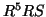
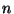

The best way to get started with Scheme is by playing around with it. This tutorial will show you what you are able to do with Scheme as a language. To get the best out of learning Scheme and this tutorial, start the interpreter and feed it! Try the examples in this tutorial, modify them and see what happens. At the same time, try to understand why the interpreter returns the answer it does. Don't hesitate to try even the most crazy ideas--nobody said that the learning process had to be dead serious.
The Scheme syntax is extremely simple: it consists of parentheses (lots of them) and prefix notation. This means that the operator comes leftmost, followed by the operands, for example:
(+ 1 2 3 4)
Parentheses are used to define what is to be computed. In many languages, it is possible to add extra parentheses without affecting the program, but this is not the case in Scheme. Adding extra parentheses will most likely result in errors or other unfortunate behaviour.
Comments begin with a semicolon and continue until the end of the line.
(+ 1 2 3 4) ; this is a comment
The syntax is described formally in .
There are two types of expressions: primitive and derived.
Primitive expressions are, for example, variable references, literal expressions, assignments, conditionals, procedures and procedure calls.
An expression consisting of a variable is a variable reference, for example:
> (define a 10) > a 10
Literal expressions are expressions created using quote or ', which are equivalent, for example:
> (quote a) a > 'a a
Numbers, characters, strings and booleans need not be quoted since they evaluate to themselves:
> 5 5 > #\a #\a > "foobar" "foobar" > #t #t
Assignments are performed using set!, for example:
> (define a 10) > a 10 > (set! a 5) > a 5
Primitive conditional expressions are constructed using if, for example:
(if (< a 10)
1
a)
Procedures are created using lambda and called by enclosing in parentheses expressions for the procedure to be called and the arguments to be passed to it:
;; Creating a procedure > (lambda (x) (* x x)) #<procedure> ;; Calling a procedure > (* 2 10) 20 > ((if (= 2 (* 2 1)) + *) 2 3) 5 > (floor 3.5) 3.0
Derived expressions are expressions that are implemented in terms of other expressions instead of being implemented directly. Conditionals using cond and let expressions are examples of derived expressions. Derived expressions can be defined as macros. For more information on macros, see .
Conditionals using cond can be constructed using nested if expressions:
(define a 10)
;; Conditional expression using nested if expressions
(if (< a 10)
a
(if (> a 20)
(* a a)
0))
;; Conditional expression using cond
(cond ((< a 10) a)
((> a 20) (* a a))
(else 0))
The let expressions could be rewritten using lambda, for example:
(let ((a 10)
(b 20))
(* a b))
is equivalent to
((lambda (a b) (* a b)) 10 20)
The syntax of the define expression is as follows:
(define var expr)
The expr part is evaluated and the value is then bound to the variable var. A variable is a symbol to which a value can be assigned and this variable is then said to be bound to the given value.
Let's start with a simple example:
(define a 2)
The third expression is evaluated and has in this case the value of 2. This value is then bound to the symbol a. We can now use the variable in other expressions, e.g.
>(+ a 3) 5
The expression can of course be more complex than the one mentioned above.
(define b (+ 25 (* 3 25)))
b is now bound to the value of the expression, i.e. 100.
Also procedures can be named with define. Let's say we wish to write a procedure for squaring a given argument x. Since we will be calling this procedure many times and we do not wish to write (* x x) over and over again, we will need a means of abstraction. The syntax for procedure definition is:
(define (name formal_parameters) body)
For example, let us create a procedure square, which takes one argument and returns its square2.1:
(define (square x) (* x x))
square is the name of the procedure definition in the environment, x is the formal parameter and (* x x) is the body of the procedure. When the procedure is called, e.g. (square 8), x will be replaced with 8 and the value of the expression (* 8 8), i.e. 64, will be returned.
Define can be conveniently used to declare global variables and to name procedures. It is a simple but strong means of abstraction. However, it should never be used to define local variables!2.2
(lambda formal-parameters body)
The keyword lambda is followed by a list of arguments (zero or more) and a body. A lambda expression evaluates to a procedure, which can be applied to appropriate arguments. When the procedure is applied, the arguments are bound to the corresponding values and the body is evaluated. The only difference between the procedure resulting from a lambda expression and a procedure created by using define is that the procedure created by the lambda expression has not been associated with a name in the environment.
As mentioned above, lambda expressions return a procedure. Let's start by creating a procedure taking one argument and returning the argument multiplied by 2.
> (lambda (x) (* 2 x)) #<procedure>
Now, to use the procedure mentioned above we have to provide it with an argument, e.g. 5. This is done in the following way:
> ((lambda (x) (* 2 x)) 5) 10
We can also bind the procedure to a name, just as we did earlier with define. Rewriting the procedure square using lambda would result in the following:
(define square
(lambda (x)
(* x x)))
So, what is the difference between binding the procedure using lambda and using define ? The answer is simple: practically none2.3. The example above is exactly the same as the following:
(define (square x) (* x x))
The latter example is only syntactic sugar for the former example. It is usually considered better programming style to write procedures using lambda expressions. We will therefore stick to using lambda expressions in the future. However, there are people who consider the latter style better since it is more compact, so you are likely to see procedures written in both ways. Practically it is of little importance in which way you choose to write your programs, the important things are that you are consistent about the way you write procedures and that you are able to understand procedures written either way.
Let us take a look at another example. We want to write a procedure for computing Fibonacci numbers. The procedure will take one integer n as an argument and return the nth Fibonacci number. Further description of the procedure can be found in Structure and Interpretation of Computer Programs. We will write two versions of the procedure--one that uses a lambda expression and one that does not2.4:
;; A procedure for counting the n:th Fibonacci number
;; See SICP, p. 37
(define fib
(lambda (n)
(cond ((= n 0) 0)
((= n 1) 1)
(else (+ (fib (- n 1))
(fib (- n 2)))))))
;; The same procedure written without using lambda
(define (fib n)
(cond ((= n 0) 0)
((= n 1) 1)
(else (+ (fib (- n 1))
(fib (- n 2))))))
The procedure fib is called in the following way:
>(fib 5) 5n is then substituted with 5 and the body of the procedure is evaluated.
It is also possible for the lambda expressions to take more than one argument. For example, we want to compute the sum of two given arguments x and y and give the procedure the marvellous name sum:
(define sum
(lambda (x y)
(+ x y)))
It is also possible to take an arbitrary number of arguments. For example, let's rewrite the procedure sum to take an arbitrary number of arguments2.5:
(define sum
(lambda (x . y)
(apply + x y)))
Dotted notation is usually used for denoting the possibility of taking an arbitrary number of arguments. The arguments after the dot is represented as a list2.6, which may be empty. The arguments before the dot are required. Hence, the procedure above expects at least one argument.
It is also possible to write procedures taking 0- arguments. For example, if we want to write a procedure list2.7 that constructs and returns a list of its arguments, we can omit the dot and write it using lambda:
(define list (lambda args args))
Note that both the dot and the parenthesis has disappeared and that args is a list! We can, of course, rewrite this without using lambda, but in that case we are not allowed to omit the dot:
(define (list . args) args)
The procedures are practically equivalent, but the latter looks more cryptic than the former. To see how they work, let's take a look at a few examples:
> (list 1 2 3) (1 2 3) > (list) ()
Let, let* and letrec are used to create local variables. The syntax of these three forms are the same. The difference lies in the regions they establish for their variable bindings and in which order the variables are bound. There is also a construct called named let, which is a variant of let. Some prefer to say that named let is merely a variant of the syntax of let.
The syntax of the let expression is the following:
(let ((var1 exp1)
(var2 exp2)
.
.
.
(varn expn))
body)
Let is only syntactic sugar for an underlying lambda application:
((lambda (var1 var2 ... varn) body) exp1 exp2 ... expn)
Each variable is bound to the corresponding expression. The scope of the variables is within the body of the let expression. However, let binds the variables as locally as possible to where they are used and the values of the variables are computed outside the let expression. This matters when the expressions providing the values for the local variables depend upon variables with the same names as the local variables.
Let's start with a simple example:
>(let ((x 2) (y 10)) (+ x y)) 12
x is bound to 2 and y is bound to 10. The scope of x and y are within the body of the let expression, that is, within (+ x y), which yields the answer 12.
The let expression in the example above is equivalent to the following lambda expression:
((lambda (x y) (+ x y)) 2 10)
As mentioned above, let binds variables as locally as possible. Consider the following expression:
>(define x 10)
>(+ (let ((x 5))
(* x (+ x 2)))
x)
45
The body of the let expression is the expression
(* x (+ x 2))
The value of x is 5, as bound with let. Hence, the value of the let expression is 35. Now, this will be added to another variable x. This x has absolutely nothing to do with the x bound in the let expression, it just happened to share the same name. The value of this outside x is 10. Now the values of the outside x and the let expression are applied to +, which yields the answer 45.
The values of the variables are computed outside let. Consider the following expression:
>(define x 10)
>(let ((x 5)
(y (* x 2)))
(+ x y))
25
The variable x will be bound to the value 5 and the variable y will be bound to 20, not to 10. This is because the x in the expression for y is computed outside the let expression and the value of that x is 10.
Keep in mind that let is used to create local variables, whereas define is usually used to create global variables!
What if we wanted to use the x declared in the let expression mentioned above? Well, Scheme provides another form of let, i.e. let*.
The syntax of let* is similar to that of let:
(let* ((var1 exp1)
(var2 exp2)
.
.
.
(varn expn))
body)
The semantics, however, is somewhat different. let* is equivalent to a sequence of nested let expressions:
(let ((var1 expr1))
(let ((var2 expr2))
(let ...
(let ((varn exprn))
body) ... )))
The bindings in a let* expression are evaluated from left to right, which means that the value of a variable may contain variables from previous bindings.
Consider the example studied above rewritten with a let* expression:
>(define x 10)
>(let* ((x 5)
(y (* x 2)))
(+ x y))
15
The value of the let* expression is 15, since the variable x bound in the let expression will be used when computing the value for the variable y. The value of x is 5. Now, the body of the let* expression is computed and the result is 15.
(let var bindings body)
The syntax and semantics are the same as for let, but the var part is bound within body to a procedure, whose formal arguments are the bound variables (in bindings) and whose body is body. It is now possible to invoke body repeatedly by calling the procedure named by var.
Let us write a procedure computing factorials using named let:
(define factorial
(lambda (n)
(let iter ((product 1)
(counter 1))
(if (> counter n)
product
(iter (* counter product) (+ counter 1))))))
The syntax for letrec is the following:
(letrec ((var1 val1)
(var2 val2)
.
.
.
(varn valn))
body)
The idea behind letrec expressions is to allow recursion in the definition of the variables bound locally. The scope of the variables include the other variables as well as the body. Any procedure body containing internal definitions can be converted into a completely equivalent letrec expression. Let's see how to convert the procedure for counting factorials into an equivalent procedure using a letrec expression instead of internal definitions:
;; The procedure factorial taken from SICP, p. 33
(define (factorial n)
(define (iter product counter)
(if (> counter n)
product
(iter (* counter product)
(+ counter 1))))
(iter 1 1))
;; The procedure factorial rewritten using letrec
(define factorial
(lambda (n)
(letrec ((iter
(lambda (product counter)
(if (> counter n)
product
(iter (* counter product)
(+ counter 1))))))
(iter 1 1)))